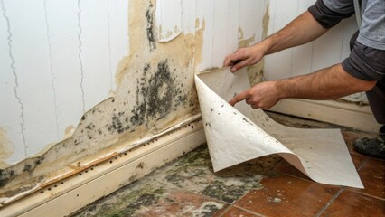
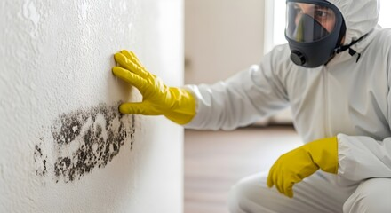

Schimmelsanierung
Schimmel nur zu überstreichen löst das Problem nicht. Wir finden die Ursache, entfernen den Befall fachgerecht und beschichten vorbeugend – schnell und sachlich.
Worum es geht

Schimmel an Wand oder Decke ist unangenehm und sollte zügig behandelt werden. Entscheidend ist: Überstreichen allein hilft nicht – der Schimmel kommt zurück, solange die Ursache besteht. Wir suchen deshalb zuerst nach dem Auslöser, entfernen den Befall fachgerecht und schützen die Fläche anschließend vorbeugend. Bei kurzfristigem Bedarf erreichen Sie uns telefonisch unter 0621 1234567.
Für wen geeignet: Für Wohnungen und Häuser in Mannheim und Rhein-Neckar-Region, in denen sich Schimmel an Wänden, Decken oder in Raumecken zeigt – für Eigentümer, Mieter und Hausverwaltungen.
Ihr Nutzen auf einen Blick
- Ursache wird gesucht und behoben – nicht nur die Oberfläche behandelt
- Gesundheit sachlich im Blick: Schimmel kann die Atemwege belasten
- Schnelle Reaktion – wir wissen, dass Schimmel als dringend empfunden wird
Was wir konkret anbieten
Schimmel fachgerecht entfernen
Wir entfernen befallene Bereiche fachgerecht statt sie nur zu überdecken und tragen anschließend eine antimikrobielle Beschichtung auf, die neuem Befall vorbeugt. Während der Arbeiten schützen wir angrenzende Flächen vor Sporenverbreitung.
Ursachenanalyse
Mit einer Feuchtigkeitsmessung grenzen wir ein, woher die Nässe kommt: ein Baumangel, eine Wärmebrücke oder das Lüftungsverhalten. Liegt eine bauliche Ursache vor, arbeiten wir mit den passenden Gewerken zusammen, damit das Problem an der Wurzel behoben wird.
Vorbeugen statt wiederholen
Diffusionsoffene Anstriche lassen die Wand atmen und erschweren erneuten Befall. Zusätzlich beraten wir Sie zum richtigen Lüften und Heizen – oft der einfachste Hebel, um dauerhaft schimmelfrei zu bleiben.
Der Ablauf
Begutachtung & Ursachenanalyse
Feuchtigkeitsmessung und Beurteilung, woher der Befall kommt.
Entfernung
Fachgerechtes Entfernen des Schimmels und der betroffenen Schichten.
Vorbeugende Beschichtung
Antimikrobielle, diffusionsoffene Beschichtung gegen erneuten Befall.
Beratung
Konkrete Empfehlungen zu Lüften und Heizen für die Zukunft.
Beispiele aus unserer Arbeit

Jetzt Schimmelsanierung anfragen
Oder kostenlose Schimmel-Begutachtung vereinbaren. Wir besichtigen kostenlos und erstellen Ihnen ein verständliches Festpreisangebot.
Jetzt Schimmelsanierung anfragen Kurzfristig? ☎ 0621 1234567